Mapeamento comportamental dos profissionais da sua empresa, relacionando cada perfil à função que a pessoa exerce, para você conduzir o time com mais clareza e tomar decisões mais assertivas.
Quero um orçamento personalizadoOrçamento sem compromisso · WhatsApp:
Muitas vezes cobramos resultados sem considerar as características comportamentais de cada profissional, suas habilidades naturais e a compatibilidade entre o perfil e a função que ele exerce.
Potenciais que ainda não foram identificados e pessoas que poderiam render mais em outro contexto.
Líderes que precisam de recursos mais assertivos para conduzir suas equipes.
Não se trata apenas de conhecer o perfil de cada colaborador, mas de usar essas informações de forma estratégica para melhorar a condução das equipes e os resultados do negócio.
A Grow For People não vende testes comportamentais.
Entrega inteligência para decisões mais assertivas sobre pessoas.
Você escolhe o recorte que faz mais sentido para o momento da sua empresa.
Um processo completo, da aplicação das avaliações até as recomendações práticas para a gestão.
Cada empresa tem um tamanho de equipe e um objetivo diferente, por isso não existe um preço único. A proposta é montada depois de uma conversa breve para entender quantas pessoas serão avaliadas, quais áreas e o que a empresa quer alcançar.
Black Friday: projetos contratados durante a campanha têm uma condição especial.
Os resultados são apresentados como apoio à tomada de decisão, nunca como um julgamento sobre a capacidade de alguém. O perfil comportamental, sozinho, não determina se uma pessoa está ou não apta a exercer uma função.
Ele amplia o olhar do gestor: ajuda a entender como cada pessoa age, o que a motiva e como ela pode se desenvolver.
Quem conduz o trabalho
Especialista em Gestão e Desenvolvimento de Pessoas
Cristã, mãe, empresária, mentora, escritora e apaixonada por pessoas.
Há mais de 20 anos atuo com gestão e desenvolvimento de pessoas, acompanhando líderes, equipes e profissionais. Nessa caminhada aprendi que o crescimento de uma pessoa, de uma carreira ou de um negócio começa sempre no mesmo lugar: em quem ela é.
No mundo corporativo, trabalho com RH estratégico: capacitação de lideranças, cultura e clima organizacional, modelos de feedback e recrutamento e seleção estratégica. Sou especialista em temperamentos e perfil comportamental.
Me chame no WhatsApp e eu monto uma proposta sob medida. Para isso, vou precisar entender:
WhatsApp: